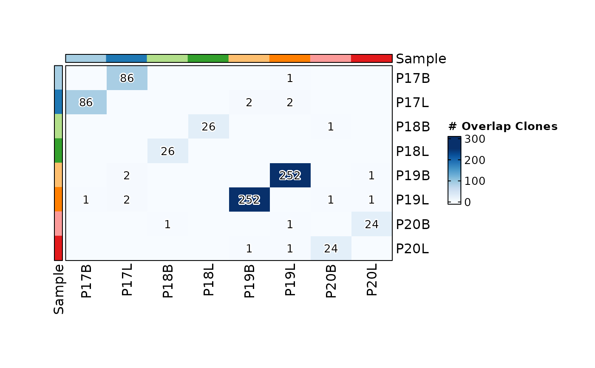
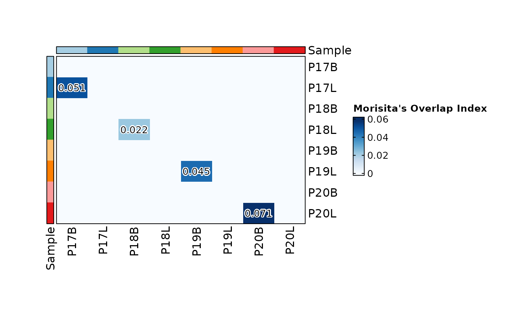
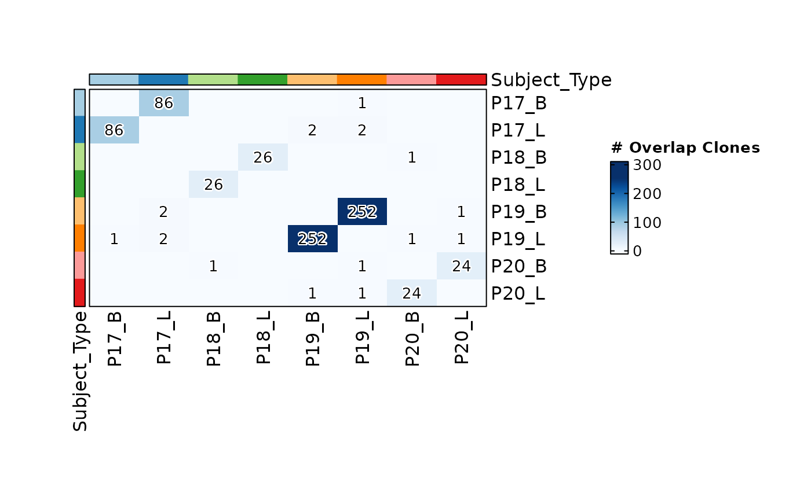
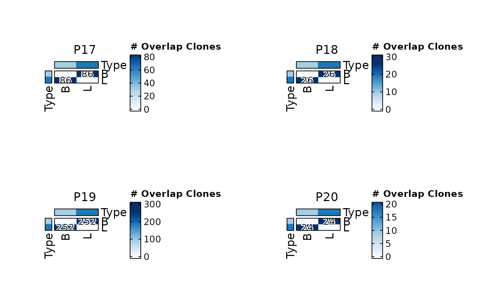

Visualizes the overlap (sharing) of T-cell or B-cell clonotypes between samples or metadata groups as a heatmap. Each cell in the heatmap quantifies the degree of clonal sharing between two groups, using one of several similarity or overlap metrics. This is a key analysis for identifying public clones shared across individuals, tracking antigen-specific clones across time points or tissues, and comparing repertoire similarity between conditions.
ClonalOverlapPlot computes pairwise overlap via
scRepertoire::clonalOverlap()
and visualizes the resulting matrix as a labeled heatmap using
plotthis::Heatmap().
Usage
ClonalOverlapPlot(
data,
clone_call = "aa",
chain = "both",
group_by = "Sample",
group_by_sep = "_",
full = TRUE,
split_by = NULL,
order = NULL,
method = c("raw", "overlap", "morisita", "jaccard", "cosine"),
palette = "Blues",
label_accuracy = NULL,
label_cutoff = 0.001,
cluster_rows = FALSE,
cluster_columns = FALSE,
show_row_names = TRUE,
show_column_names = TRUE,
...
)Arguments
- data
The product of
scRepertoire::combineTCR(),scRepertoire::combineBCR(), orscRepertoire::combineExpression().- clone_call
How to define a clone. One of
"gene","nt","aa"(default),"strict", or a custom variable name in the data.- chain
Which chain(s) to use:
"both"(default),"TRA","TRB","TRD","TRG","IGH", or"IGL".- group_by
Metadata column(s) used to define the groups being compared. Default is
"Sample". Multiple columns are concatenated usinggroup_by_septo form compound group labels.- group_by_sep
Separator used when concatenating multiple
group_bycolumns. Default is"_".- full
Logical; if
TRUE(default), the full symmetric heatmap is displayed. IfFALSE, only the upper triangle is shown (lower triangle values are mirrored from the upper triangle).- split_by
Metadata column used to split the data into separate heatmaps. When specified, overlaps are only calculated within each split group (not across splits). Default is
NULL.- order
A named list controlling the order of factor levels. List names are column names; list values are the desired order. Default is
NULL.- method
The overlap or similarity metric. One of:
"raw"(default) — Absolute number of overlapping clones between two groups."overlap"— Overlap coefficient: size of intersection divided by the size of the smaller set."morisita"— Morisita’s overlap index, accounting for clone size (abundance) in addition to presence/absence."jaccard"— Jaccard similarity index: size of intersection divided by size of union."cosine"— Cosine similarity between clone abundance vectors.
- palette
Color palette for the heatmap. Default is
"Blues".- label_accuracy
Numeric; the number of decimal places shown in cell labels. Default is
NULL, which uses1for"raw"and0.01for other methods.- label_cutoff
Numeric; values below this threshold are not labeled in the heatmap cells. Default is
1e-3. Set to0to show all labels.- cluster_rows
Logical; if
TRUE, rows are hierarchically clustered. Default isFALSE.- cluster_columns
Logical; if
TRUE, columns are hierarchically clustered. Default isFALSE. Clustering distance is computed as1 - rescaled_overlap_value.- show_row_names
Logical; if
TRUE(default), row names are displayed.- show_column_names
Logical; if
TRUE(default), column names are displayed.- ...
Additional arguments passed to
plotthis::Heatmap()(e.g.,name,cell_type,width,height).
Note
Clustering: When cluster_rows or cluster_columns is TRUE, the
clustering distance is 1 - rescaled(values) for the upper triangle,
ensuring that groups with high overlap are placed close together.
Split behavior: When split_by is specified, overlap is calculated
independently within each split group. Groups from different splits are
never compared against each other.
Examples
# \donttest{
set.seed(8525)
data(contig_list, package = "scRepertoire")
data <- scRepertoire::combineTCR(contig_list,
samples = c("P17B", "P17L", "P18B", "P18L", "P19B","P19L", "P20B", "P20L"))
data <- scRepertoire::addVariable(data,
variable.name = "Type",
variables = factor(rep(c("B", "L"), 4), levels = c("L", "B"))
)
data <- scRepertoire::addVariable(data,
variable.name = "Subject",
variables = rep(c("P17", "P18", "P19", "P20"), each = 2)
)
ClonalOverlapPlot(data)

ClonalOverlapPlot(data, clone_call = "strict", label_cutoff = 0,
label_accuracy = 0.001, method = "morisita", full = FALSE)

ClonalOverlapPlot(data, group_by = c("Subject", "Type"))

ClonalOverlapPlot(data, group_by = "Type", split_by = "Subject")

# }